Press and creator kit
Civic Watch is a comedy first-person shooter for iPhone, iPad and Android, made by one developer. Everything on this page may be used in coverage, videos, Shorts and thumbnails. No login, no permission needed. For anything else (codes, an interview, a dev Q&A in your stream), email support@valuxgames.com.
For creators
All footage is real gameplay recorded from the game itself: offline bot matches with the phone HUD, hit effects set to no blood, no music and nothing burned in, so you can add your own voice, captions and logo.
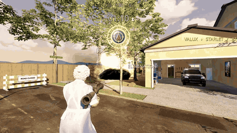
6-second gameplay GIF (4.2 MB). Download GIF · MP4 version.

- Thumbnail and art pack (ZIP, 33 MB): 10 transparent operative cutouts rendered from the game's own 3D models, transparent logos, key art made from a real frame, gameplay stills and the GIF. Download
- 16:9 gameplay b-roll (ZIP, 197 MB): 6 clips, 107 s, 1920 × 1080, game sound only: grandma Pearl's rocket launcher on Maple Court, weapon swaps in Mega Mart, Brenda Downtown, a 30-second slice of a continuous match with a 10-kill streak, Infestation wave 6 at night and an aerial over Hydro Dam. Download
- 9:16 clip pack (ZIP, 258 MB): 10 vertical clips, 15–20 s each, 1080 × 1920, game sound only, no captions: first-person and over-the-shoulder fights across six arenas, the weapon rack, Infestation and a kill streak. Download
You may stream and monetize videos of Civic Watch. No permission or license needed.
Good to know before you record:
- About 2.3 GB on iOS, so start the download on Wi-Fi. Bot matches, solo Infestation and the gun range then work with no connection and no account.
- Free, with optional cosmetics. No ads, no loot boxes, no subscriptions.
- Android is on Google Play in the United States for now. The App Store version is available in 175 countries and regions.
- Phone bot matches have up to 8 bots. Xbox, PlayStation and MFi controllers work, with rumble.
Two honest notes:
- Civic Watch is played against bots. Rooms in the online game list can be bot matches, so please don't describe them as real players.
- If we gave you free in-game items, please say so in the video itself, for example "Valux Games gave me free in-game items".
Want codes for yourself and your viewers, your own link, or the developer in your stream chat? Email support@valuxgames.com.
Fact sheet
| Developer | Valux Games LLC, Raleigh, North Carolina, USA (one developer: Joey Sanchez) |
|---|---|
| Genre | Comedy FPS: offline bot deathmatch and a night survival mode |
| Platforms | iPhone and iPad (iOS 15+, landscape) · Android (Google Play) |
| Release | iOS: September 30, 2026 · Android: October 11, 2026 · Infestation update (v0.5.2): October 7, 2026 |
| Availability | App Store: 175 countries and regions · Google Play: United States at launch |
| Price | Free. Optional cosmetic purchases. No ads, no loot boxes, no subscriptions |
| Age rating | App Store 13+ · ESRB Teen (Google Play) |
| Size | About 2.3 GB on iOS |
| Offline play | Bot deathmatch (up to 8 bots on phones), solo Infestation and the gun range. No account needed |
| Online | Free-for-all and Infestation co-op with a party code. No voice chat |
| Controls | Landscape touch · Xbox, PlayStation and MFi controllers with rumble |
| Engine | Godot 4 |
| Links | App Store · Google Play · civicwatchgame.com |
| Press contact | support@valuxgames.com (Joey Sanchez) |
About the game
In Fairview, a federal preparedness grant went sideways and every neighbor ended up armed. Pick one of 29 playable locals (grandma, the hoodie gamer, the minivan logistics mom), all with identical stats, and fight bots across 14 original arenas: a hydro dam, a missile silo, a warehouse club, a Miami yacht, a suburban cul-de-sac and more. Choose Normal, Advanced or Hardcore rules.
Infestation is the night survival mode: Lurkers, Skitters, Spitters, Crawlers and the Hive Tick boss, solo or in online co-op. Bot matches, solo Infestation and the gun range work with no connection and no account. The game is free. Six operatives and the factory gun finish are free; other operatives and finishes are optional cosmetics that never change damage, accuracy or range.
Key features
- 29 playable neighbors with comedy bios, same combat stats for everyone
- 14 original arenas plus a gun range
- Offline bot deathmatch, up to 8 bots on phones, with three rule sets (Normal fights last longer; Hardcore is one shot)
- Infestation: five species of giant bugs at night, solo or co-op
- 14 firearms, a combat knife, frag, smoke and flash grenades, see-through optics, laser, flashlight and night vision
- Touch controls built for landscape; Xbox, PlayStation and MFi controllers with rumble
- No ads, no loot boxes, no subscriptions
Trailer
30-second gameplay trailer (the App Store app preview). Download MP4. Its music is a licensed stock track that YouTube may claim, so for your own videos use the b-roll and clip packs above: game sound only, nothing to claim.
Screenshots
Real 1920 × 1080 frames from offline bot matches (click for full size).

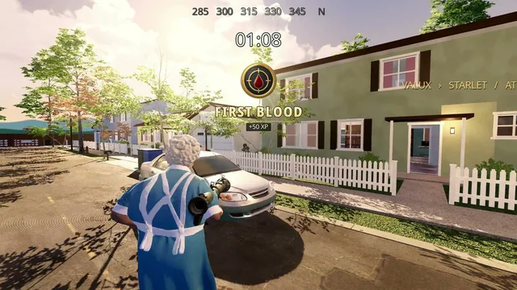

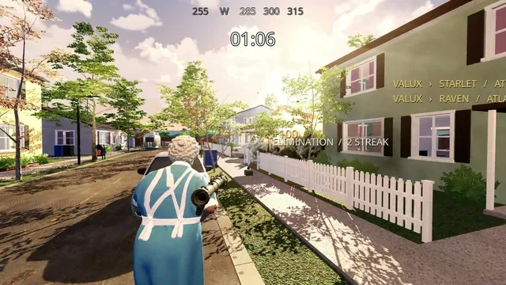

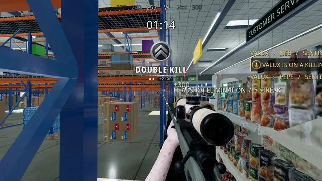

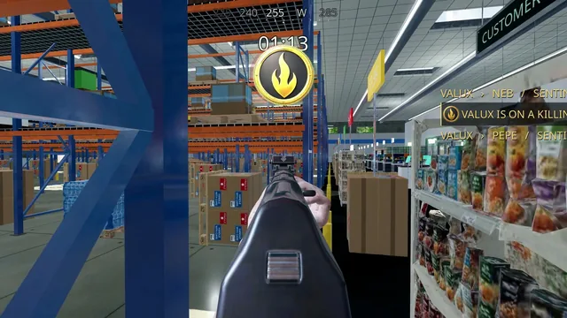

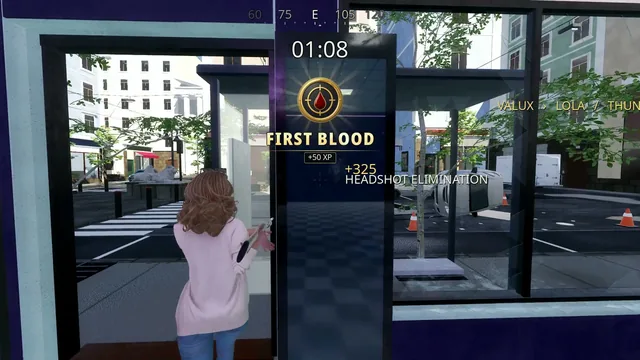

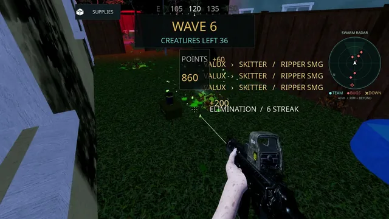
In-game arena and mode previews:

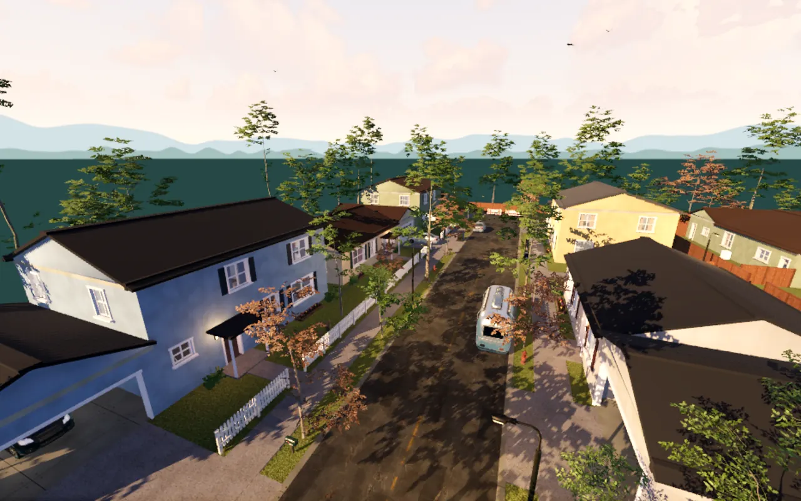


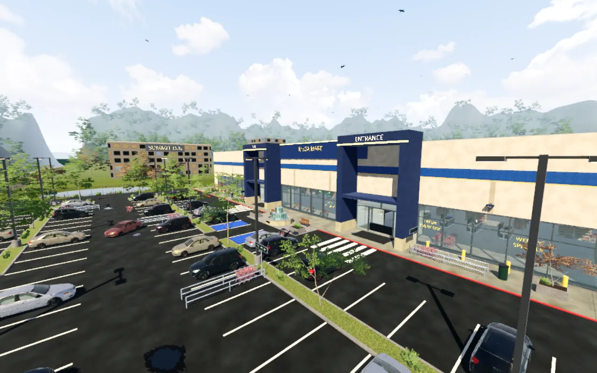

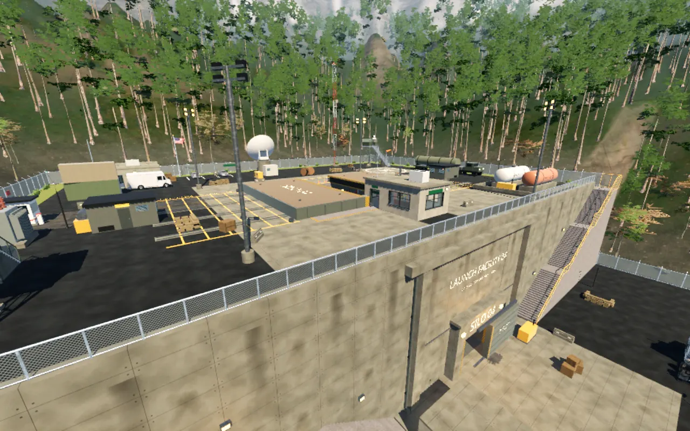

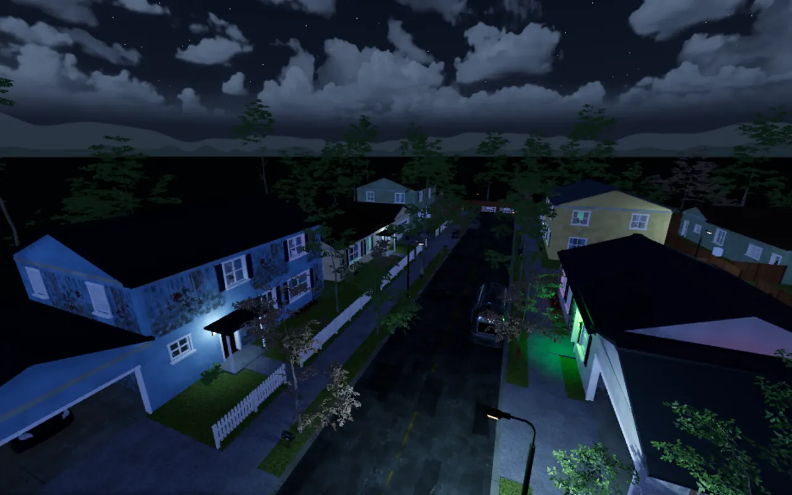

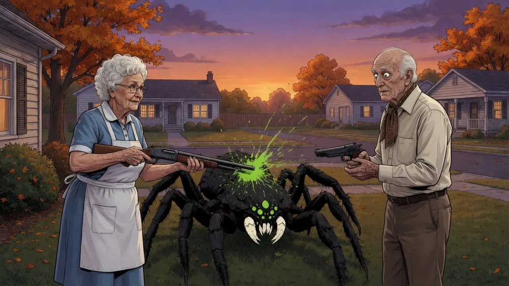
Logos, cutouts and key art
Transparent PNGs. The operatives are rendered from the game's own 3D models; the key art is a real gameplay frame with the logo. All of it is in the art pack above.

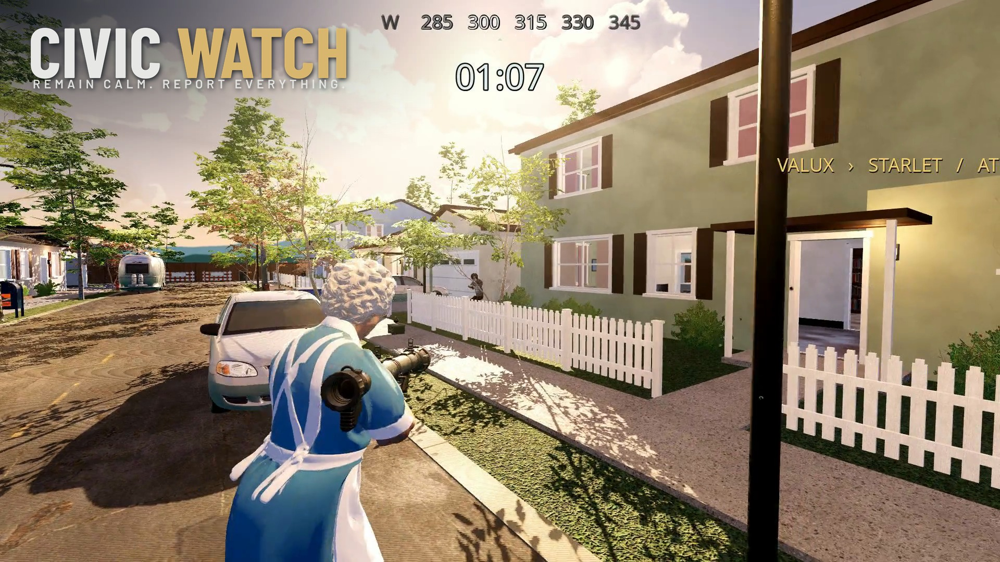


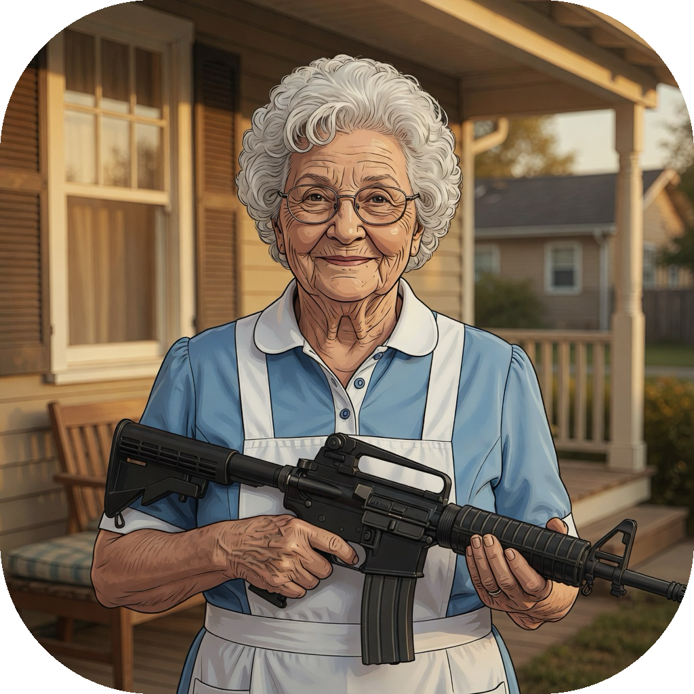
Some of the locals
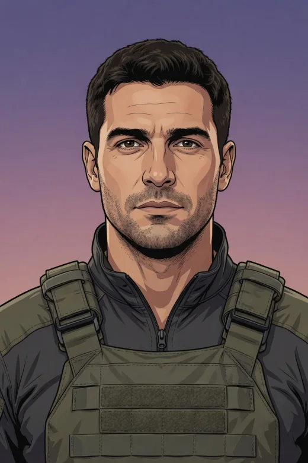
In-game character-select portraits. Loading-screen illustrations such as the neighborhood watch illustration are artwork, not gameplay.

About the developer
Valux Games LLC is a one-person studio in Raleigh, North Carolina. Civic Watch is its first shooter; the studio also makes Mecca Gecko, a paint hide-and-seek party game for iPhone, iPad and Android.
Civic Watch is an original game by Valux Games LLC and is not affiliated with Nintendo, Rare, or any Bond franchise.